Fasad dizayni: kunduzi va kechqurun
Focus Mebel o‘rnida PDP Academy ochiladi. Kirish qismi va Galeria ustidagi ikkinchi qavat (Galeria vivyeskasi tugagan ustungacha) PDP Academy brendida bezatiladi. Bu versiyaga bayroqlar, LED tablo, oyna plyonkasi, kechki LED yoritish, devor ranglari va vivyeska fonining uchta varianti qo‘shildi.
Ko‘chadan qaraganda

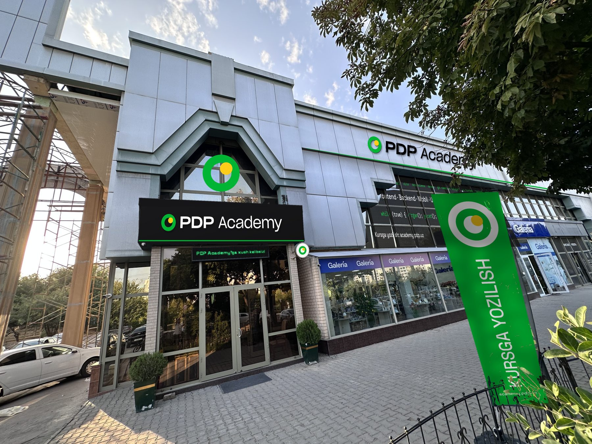
Chiziqni chapga va o‘ngga suring.

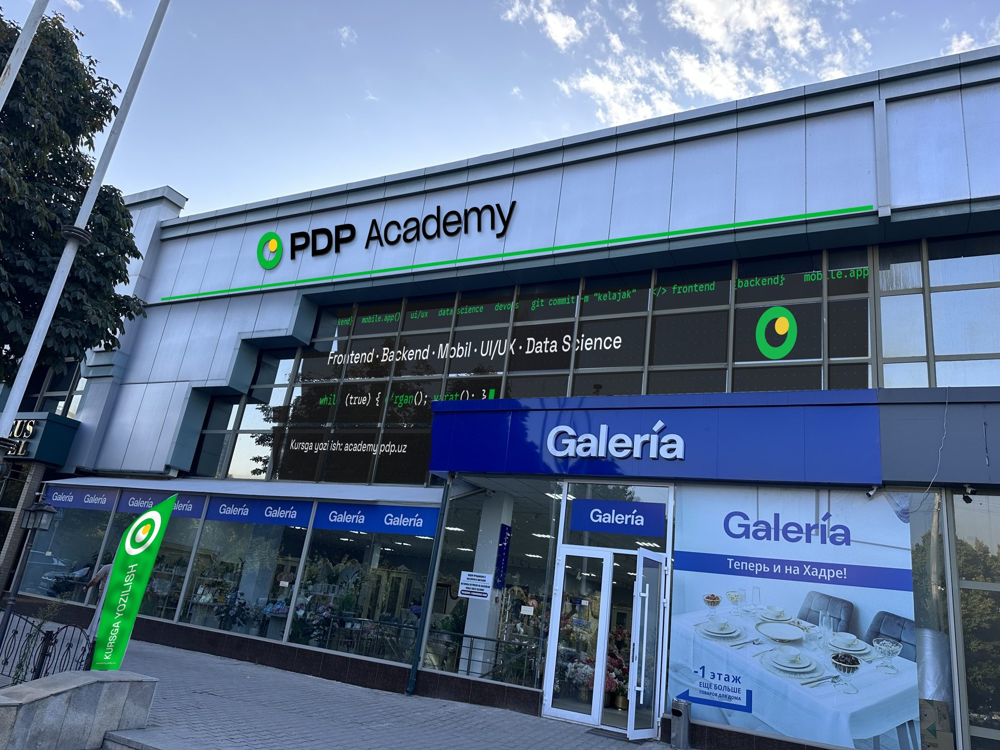
Nima qo‘shildi
- Bayroqlar
- Ikkala Focus bayrog‘i o‘rniga yashil PDP Academy bayrog‘i: tepada belgi, vertikal «KURSGA YOZILISH», pastda academy.pdp.uz
- LED tablo
- Eshik ustidagi tablo ishchi rejimda: «PDP Academy’ga xush kelibsiz!» yashil yozuv bilan
- Oyna plyonkasi
- Ikkinchi qavat oynalariga IT uslubidagi plyonka; tafsiloti pastda
- Uchburchak oyna
- Kirish ustidagi uchburchak oynada katta belgi (halqa va quyosh)
- Konsol
- Dumaloq oq lightbox, faqat belgi
Kechqurun, LED yoritish bilan
Kechasi yoritilgan elementlar ko‘chadan bir butun PDP Academy obrazini beradi. Chiziqni surib kunduzgi va kechki holatni solishtiring.
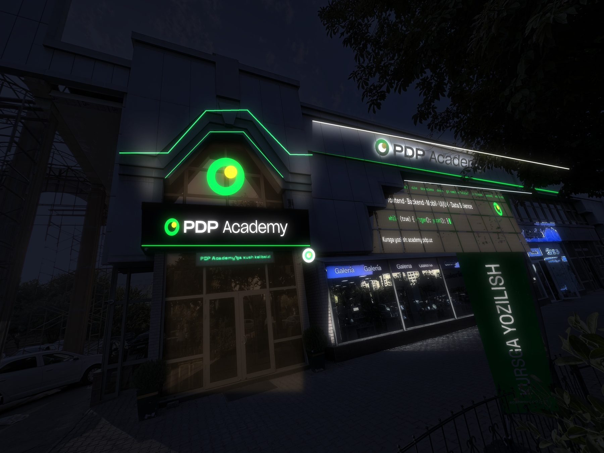
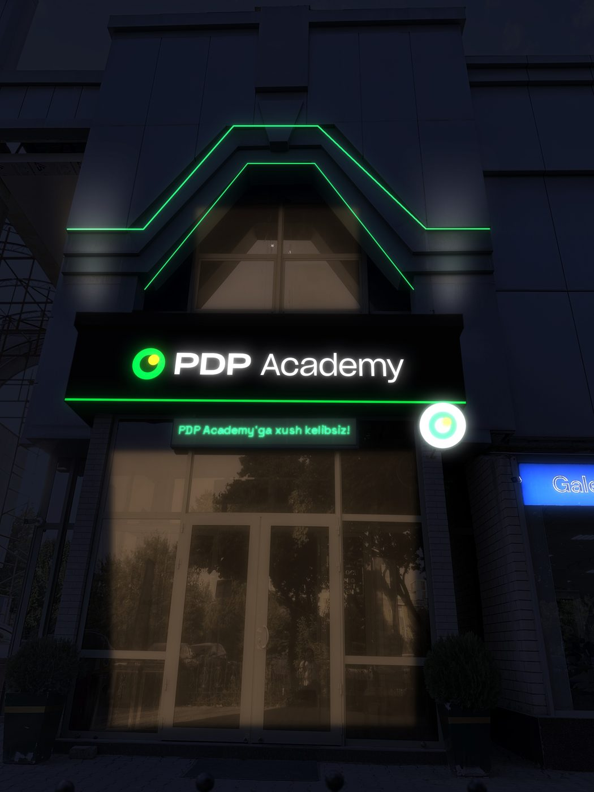
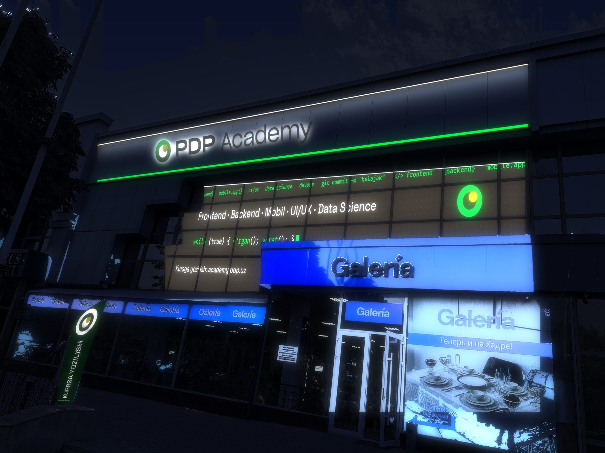
Tashqi LED yoritish
- Portal ramkasi. Uchburchak ramka bo‘ylab ikki qator yashil LED neon (tashqi va ichki chiziq). Dasturlanadigan kontroller bilan sekin «nafas olish» effekti va bayram ranglari qo‘yish mumkin.
- Ikkinchi qavat paneli. Tom chetida iliq oq chiziqli LED, panel pastga qarab yoritiladi. Pastki chetida yashil LED chiziq, Galeria chegarasigacha.
- Harflar. Ikkinchi qavatdagi qora harflar orqadan yoritiladi, kechasi atrofida oq nur hosil bo‘ladi. Kirish vivyeskasi harflari ichidan yoritiladi.
- Oynalar. Deraza tepasida chiziqli LED. Plyonka kechasi ichkaridagi yorug‘lik bilan ko‘rinadi.
- Kirish ustunlari. Vivyeska tepasida ikkita pastdan yuqoriga qaragan prozhektor portal devorini yoritadi.
- Kichik elementlar. Konsol lightbox, LED tablo va uchburchak oynadagi yoritilgan belgi.
Nega qora fon va qanday muqobillar bor
Qora fonni tanlashimning sabablari: PDP Academy logotipining rasmiy «to‘q fon uchun» varianti bor, unda hech narsa o‘zgartirilmaydi (halqa yashil, quyosh sariq, yozuv oq). Kumushrang alyuminiy fasadda va ko‘k Galeria yonida qora eng kuchli kontrast beradi. Kechqurun esa faqat harflar yonadi, quti ko‘rinmaydi. Quyida uchala variant bir xil kadrda.
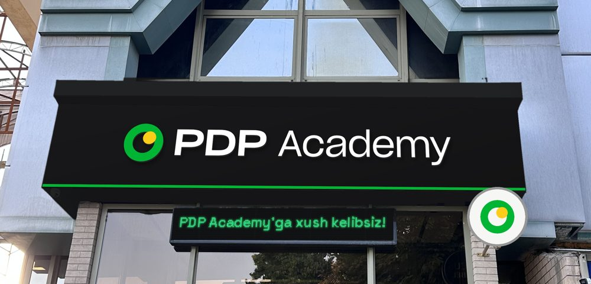
Qora Tavsiya
- Rasmiy logotip fayli, o‘zgartirishsiz
- Fasad va Galeria fonida eng aniq ajralib turadi
- Kechasi faqat harflar yonadi, ko‘rinishi toza
- Kunduzi og‘irroq ko‘rinadi
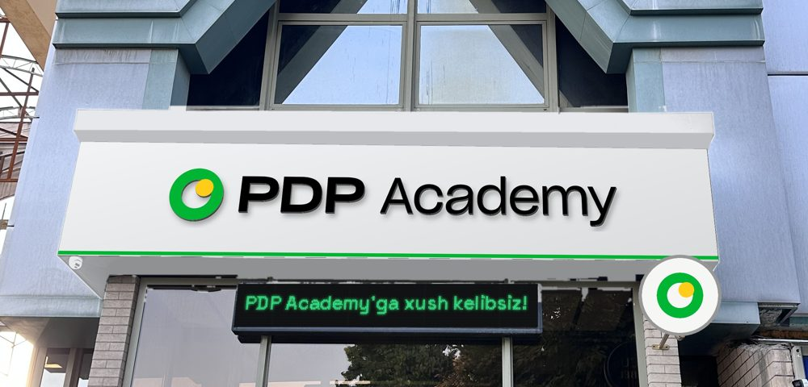
Oq Muqobil
- Rasmiy «och fon uchun» logotip
- Yengil, kumushrang fasadga mos
- Kunduzi fasad bilan qo‘shilib ketadi
- Kechasi butun quti oq bo‘lib yonadi
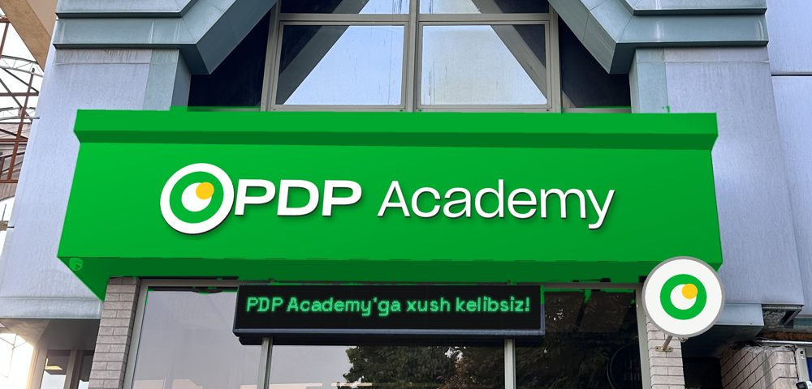
Yashil Tasdiq kerak
- Brend rangi, uzoqdan eng ko‘zga tashlanadi
- Rasmiy fayllarda yashil fon uchun logotip yo‘q: halqa yashil fonda yo‘qoladi, shuning uchun belgi oq doiraga qo‘yildi
- Art-direktor tasdig‘i kerak
Devorni to‘liq o‘zgartirmasdan
Alyuminiy panellar qoladi. Faqat portal atrofidagi yashilsimon-kulrang ramka plyonka yoki bo‘yoq bilan qayta ranglanadi, uchburchak oynaga yoritilgan belgi qo‘yiladi.
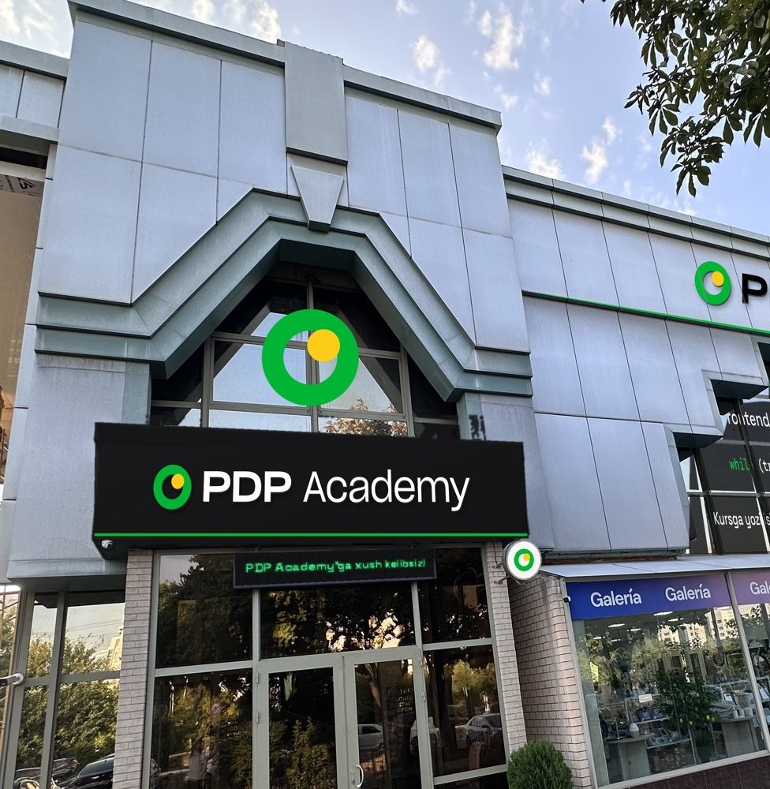
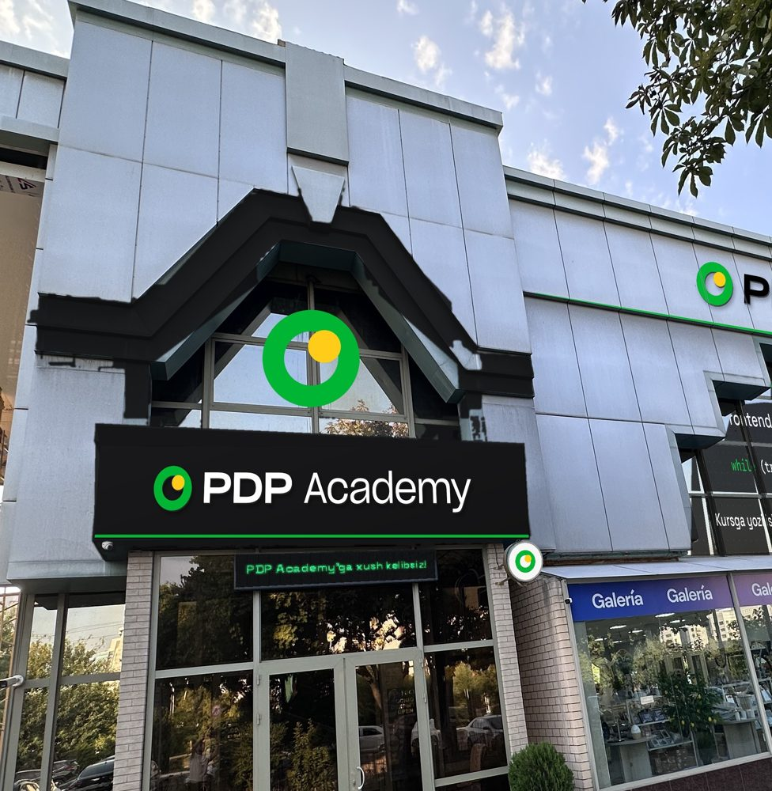
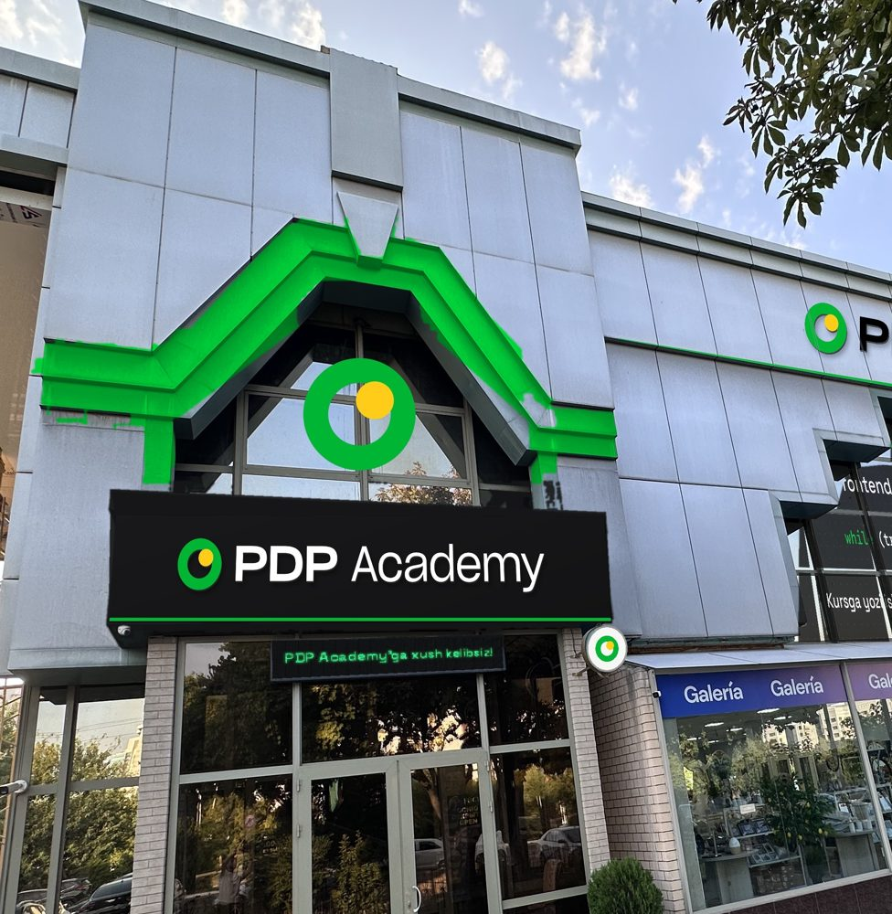
Interaktiv g‘oyalar
- Orbita. Uchburchak oynadagi belgida sariq quyosh kechasi halqa atrofida sekin aylanadi (LED ekran yoki dasturlanadigan yoritish).
- QR lavha. Kirish yonida «Kursga yozilish» QR-kodli lavha: o‘tkinchi telefon bilan skanerlab darhol ro‘yxatdan o‘tadi.
- LED tablo xabarlari. «Xush kelibsiz» dan tashqari ochiq eshiklar kuni, bepul master-klass va yangi guruhlar haqida xabarlar.
- Dasturlanadigan kontur. Portal LED konturi bayramlarda va tadbirlarda rangini o‘zgartiradi.
Ikkinchi qavat oynalari: IT uslubi
Bir tomonlama ko‘rinadigan perforatsiyalangan plyonka: tashqaridan grafika ko‘rinadi, ichkaridan esa ko‘cha ko‘rinadi. Grafika rom bo‘ylab har bir oynaga bo‘lib yopishtiriladi.
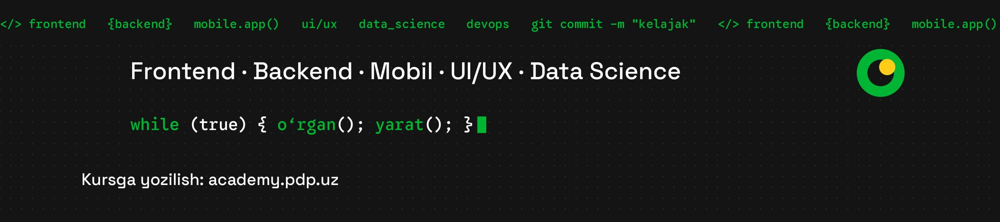
- Yuqori qator
- Yugurib turgan kod satri: frontend, backend, mobile, ui/ux, data science, devops
- O‘rta qator
- Yo‘nalishlar: Frontend · Backend · Mobil · UI/UX · Data Science
- Kod satri
- while (true) { o‘rgan(); yarat(); }
- Pastki qator
- Kursga yozilish: academy.pdp.uz (Galeria vivyeskasidan chapda ko‘rinadi)
- Belgi
- O‘ng tomonda PDP Academy belgisi, plyonkadagi yagona sariq element
Tekshirish kerak
- Joyida o‘lchash: kirish vivyeskasi eni va balandligi, ikkinchi qavat panelining uzunligi, oynalar o‘lchami.
- Plyonkadagi va bayroqdagi matnlar: kurslar ro‘yxati va sayt manzili.
- Logo faqat design.pdp.uz/logos dagi SVG fayldan chiqariladi, qayta terilmaydi va cho‘zilmaydi.
- LED uchun elektr ulanishi, taymer yoki kontroller, IP65 himoya.
- Fasaddagi reklama uchun hokimiyat ruxsatnomasi va bino egasining roziligi.
Rasmlar sizning fotosuratlaringiz ustiga perspektivada qo‘yilgan taklif. Kechki holat kunduzgi rasmdan hisoblangan, haqiqiy yorug‘lik biroz farq qiladi. O‘lcham va materiallar taxminiy.